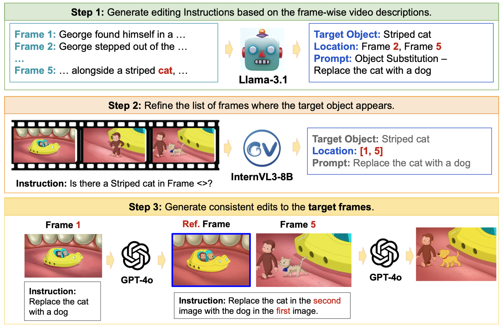
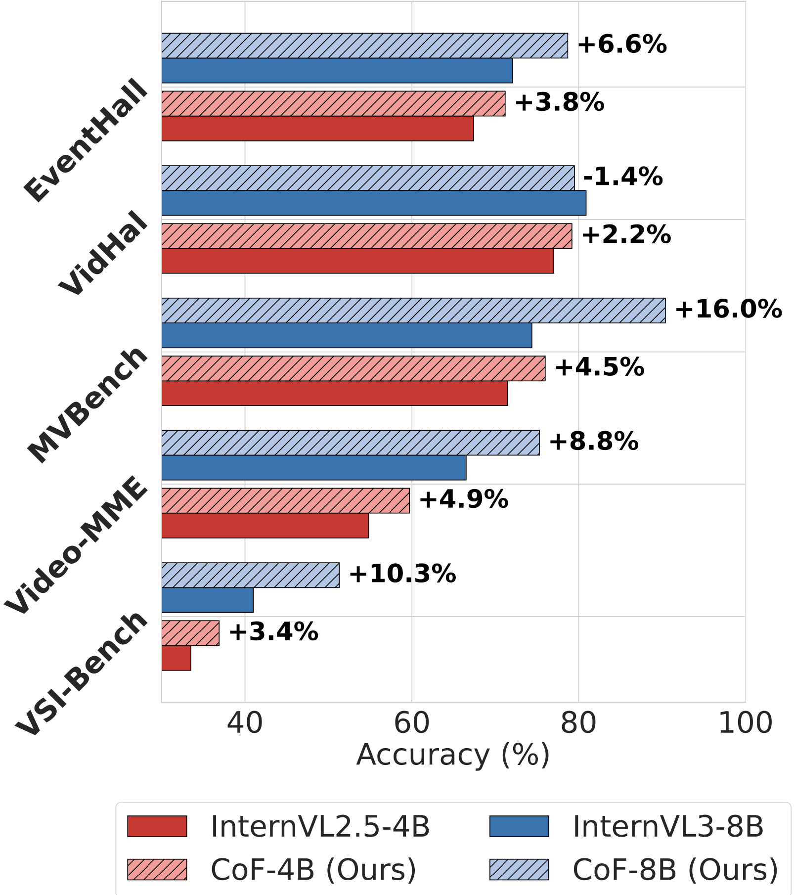
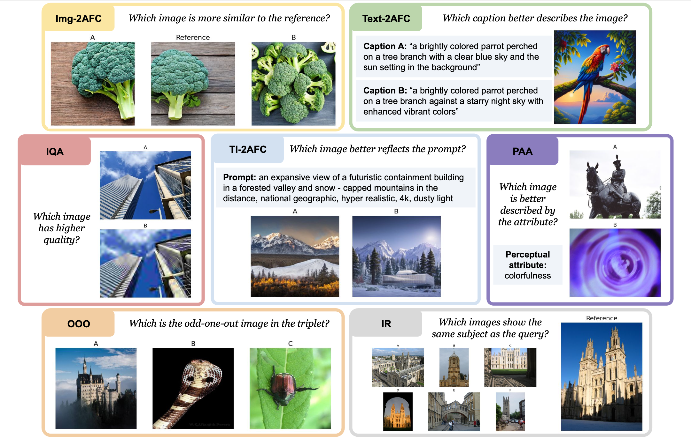
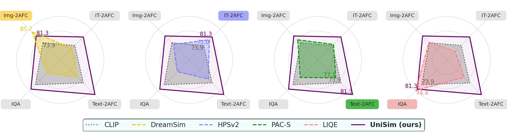
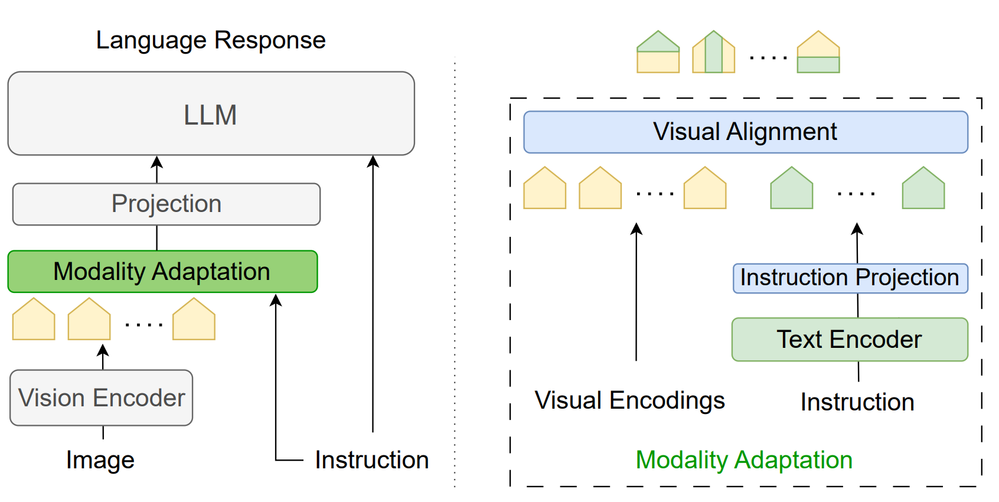
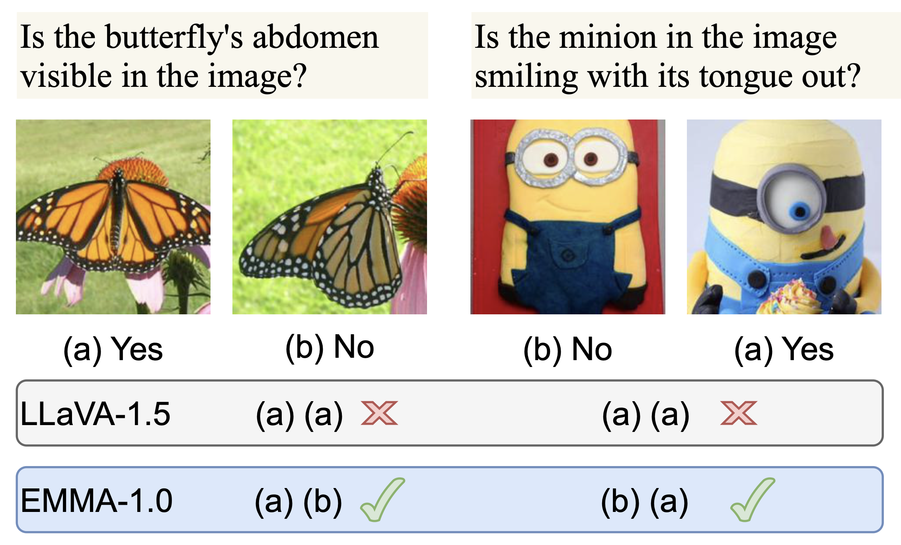
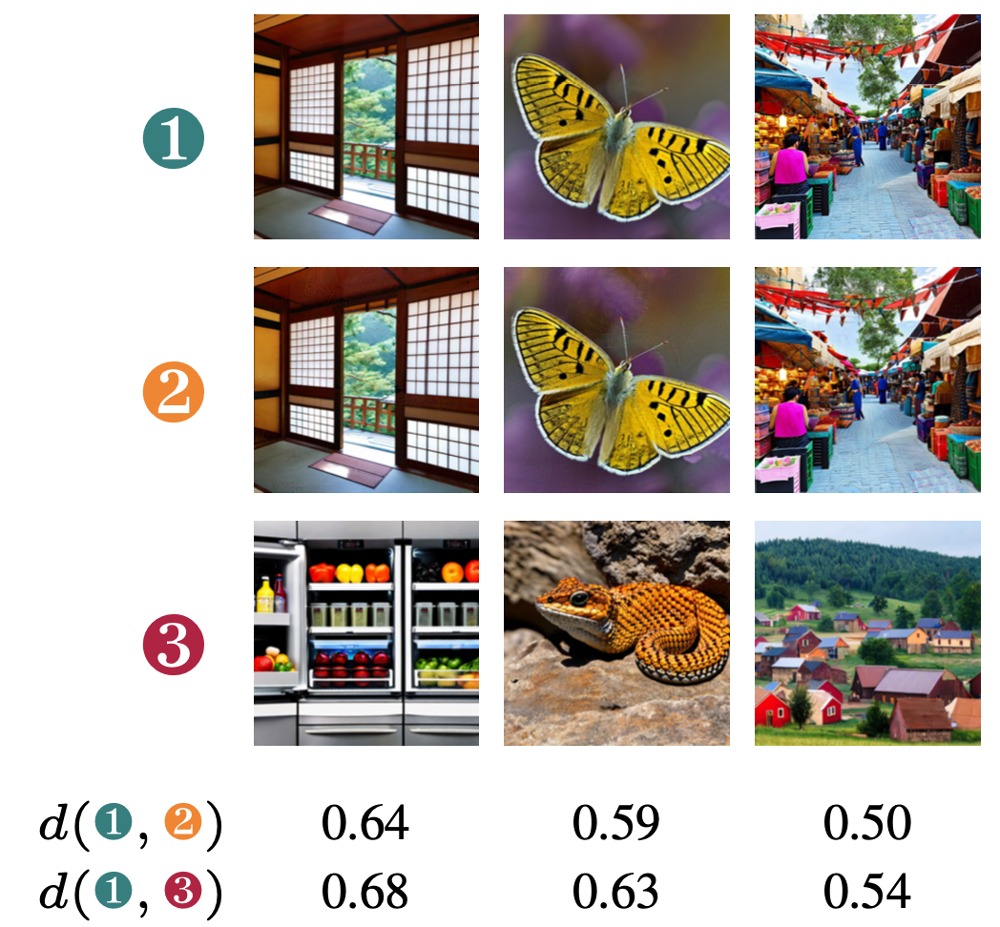
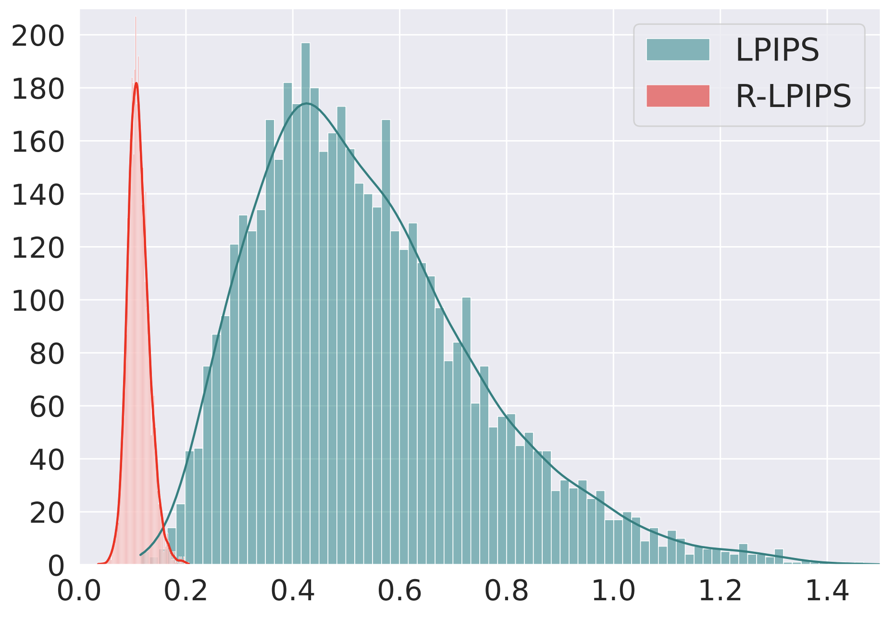

|
I’m a Ph.D. candidate at New York University in the
EnSuRe Research Group, where I’ve been a research assistant since January 2023.
I'm pleased to be co-advised by
Siddharth Garg and
Farshad Khorrami. My research focuses on advancing the visual understanding and generation capabilities of Large multimodal models
(including multimodal LLMs).
During summer 2025, I joined Adobe as a research intern to continue pursuing this line of work on enhancing visual capabilities
in Large multimodal models.
Email / Google Scholar / GitHub / Twitter / LinkedIn / Resume |

|
|
My research focuses on advancing the visual understanding capabilities of multimodal large language models (MLLMs).
In particular, I explore methods to enhance spatio-temporal understanding in video LLMs and to improve visual
alignment through more effective multimodal representation adaptation. Broadly, my goal is to make MLLMs more capable,
interpretable, and robust across diverse visual understanding and reasoning challenges.
Recently, my work has expanded toward unified large multimodal models that integrate both visual understanding and
generation within a single framework. I am particularly interested in developing evaluation methodologies and improvement
strategies for these integrated systems to better assess and advance their holistic visual capabilities.
During my research internship at Adobe, I focused on strengthening the visual understanding capabilities of
generative models for the image generation task. Specifically, we developed SpotEdit, a comprehensive benchmark
for visually guided image editing that systematically evaluates models across diverse editing scenarios.
Notably, SpotEdit includes a dedicated hallucination evaluation component, highlighting how leading models—such as
GPT-4o—can misinterpret visual cues and perform semantically incorrect edits.
|
|
|
In my recent work, Chain-of-Frames (CoF), we introduced a novel framework for grounding temporal reasoning in video understanding, supported by synthetic data to improve model generalization across diverse tasks. We demonstrated that models trained on synthetic, temporally grounded reasoning traces can successfully learn temporal dependencies even under significant distributional shifts.
Prior to that, UniSim presented a unified benchmark and model suite for multimodal perceptual similarity tasks, uncovering key insights into the generalization limitations of current state-of-the-art vision-language models—both specialized and general-purpose. Earlier, EMMA proposed an efficient modality adaptation module that effectively aligns visual and textual representations, enhancing cross-modal robustness and performance in MLLMs with minimal computational overhead.
|
|

|
S. Ghazanfari, W. Lin, H. Tian, and E. Yumer NeurIPS W 2025 PDF / arXiv / code
We present SpotEdit, a comprehensive
benchmark designed to systematically assess visually-guided image editing methods across diverse diffusion, autoregressive, and hybrid generative models, uncovering substantial performance disparities. To address a critical yet underexplored
challenge, our benchmark includes a dedicated component on hallucination, highlighting how leading models, such as GPT-4o, often hallucinate the existence of a
visual cue and erroneously perform the editing task.
|
|

|
S. Ghazanfari, F. Croce, N. Flammarion, P. Krishnamurthy, F. Khorrami, and S. Garg Under review PDF / arXiv / code
We propose chain-of-frames (CoF) to obtain video LLMs whose reasoning steps are grounded in, and explicitly refer to, the relevant frames .
We first create a large dataset of diverse questions, answers, and reasoning traces with references to frame IDs from both natural and synthetic videos. Then, we fine-tune existing video LLMs on this chain-of-frames data (CoF-Data). Our approach is simple and self-contained, and, unlike existing approaches for video CoT, does not require auxiliary networks or complex inference pipelines.
Our CoF-InternVL2.5-4B and CoF-InternVL3-8B models, based on CoF, outperform the baselines across several benchmarks (right figure above). Moreover, they generate interpretable reasoning traces that accurately refer to the key frames to answer the given question.
|
|


|
S. Ghazanfari,S. Garg , N. Flammarion, P. Krishnamurthy, F. Khorrami, and F. Croce CVPR W 2025 PDF / arXiv / code
In this our work, we propose UniSim-Bench,
the first benchmark to track the progress of perceptual
similarity metrics across uni- and multimodal tasks.
We identify the limitations of current specialized perceptual
in generalizing to unseen datasets and perceptual tasks.
We propose UniSim, a set of multi-task perceptual models which
are a first step towards general-purpose perceptual metrics.
Together, UniSim-Bench and UniSim lay the groundwork for
understanding the challenges of learning automated metrics
that broadly mimic human perceptual similarity, beyond narrow,
task-specific applications.
|
|


|
S. Ghazanfari, A. Araujo, P. Krishnamurthy, S. Garg and F. Khorrami TMLR 2025 PDF / arXiv / code
In this paper, we propose EMMA (Efficient Multi-Modal Adaptation), a lightweight cross-modality
module designed to efficiently fuse visual and textual encodings, generating instruction-aware
visual representations for the language model. Our key contributions include: (1) an efficient
early fusion mechanism that integrates vision and language representations with minimal added
parameters (less than 0.2% increase in model size), (2) an in-depth interpretability analysis
that sheds light on the internal mechanisms of the proposed method; (3) comprehensive experiments
that demonstrate notable improvements on both specialized and general benchmarks for MLLMs.
Empirical results show that EMMA boosts performance across multiple tasks by up to 9.3% while
significantly improving robustness against hallucinations.
|
|

|
S. Ghazanfari, A. Araujo, P. Krishnamurthy, F. Khorrami and S. Garg ICLR 2024 PDF / arXiv / code
In this work, we demonstrate the vulnerability of the SOTA perceptual similarity metric
based on an ensemble of ViT-based feature extractors to adversarial attacks.
We then propose a framework to train a robust perceptual similarity metric called LipSim
(Lipschitz Similarity Metric) with provable guarantees by leveraging 1-Lipschitz neural
networks as backbone and knowledge distillation approach to distill the knowledge of the
SOTA models. Finally, a comprehensive set of experiments shows the performance of LipSim
in terms of natural and certified scores and on the image retrieval application.
|
|

|
S. Ghazanfari, S. Garg, P. Krishnamurthy, F. Khorrami and A. Araujo ICML W 2023 PDF / arXiv / code
In this work, we show that the LPIPS metric is sensitive to adversarial perturbation and propose the
use of Adversarial Training to build a new Robust Learned Perceptual Image Patch Similarity (R-LPIPS)
that leverages adversarially trained deep features. Based on an adversarial evaluation, we demonstrate
the robustness of R-LPIPS to adversarial examples compared to the LPIPS metric.
Finally, we showed that the perceptual defense achieved over LPIPS metrics could easily
be broken by stronger attacks developed based on R-LPIPS.
|